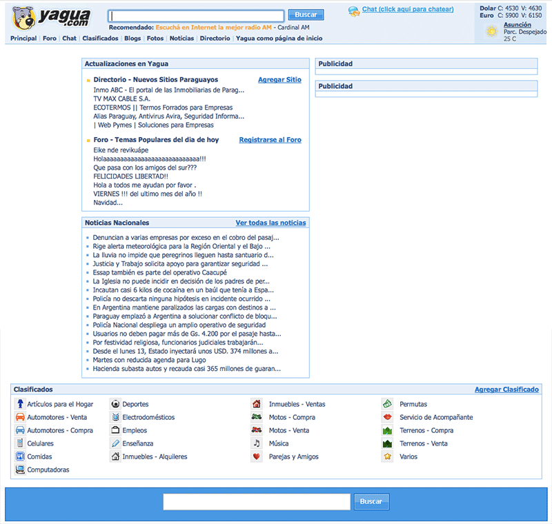

Yagua.com
Diseño, HTML & CSS. Concepto & programación: Augusto Ruibal.
Así es como se veía (faltan los banners) el viejo Yagua, que era esencialmente un directorio de sitios web nacionales mezclado con noticias, foros y un poco de todo.
Después de limpiar y simplificar un poco el logo, empecé a ordenar un poco las categorías, jugar con colores, layouts, acomodar el contenido, etc.
De las distintas combinaciones que fui probando, esta es lejos mi favorita. No es la que quedó.

Modelo de página interna con el estilo del diseño previo. Quizás un poco demasiado azul, pero descontando eso, que es fácil de cambiar, me gusta bastante.

Este es el diseño final. El sitio se vendió a Vierci como parte de la red paraguay.com y desde entonces no se que tan bien funciona, pero conozco gente que lo usa de manera regular, particularmente la Guía de Delivery.